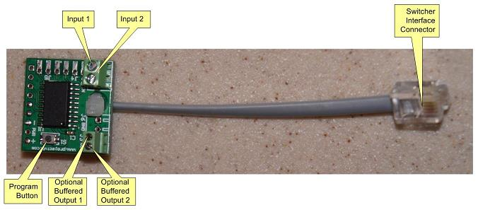
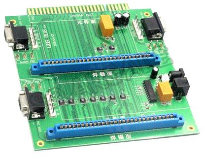
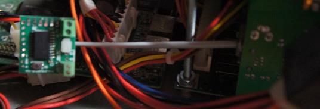

NoMote-2 - JAMMA 2-in-1 Switcher Remote Eliminator
Stock Status: Special Order
This is a quick-start guide for the NoMote-2 JAMMA 2-in-1 switcher remote eliminator. It lets you use your existing control panel buttons, instead of the wireless remotes that the Chinese JAMMA switchers use.
Programming/operation is similar to the NoMote-6.
Pictures
These are the components of the board:

This is the JAMMA switcher board that these are meant to be installed on:

Here's the board plugged into the JAMMA switcher:

Installation:
-Disconnect the existing remote control receiver (or switch) from the RJ11 port on the switcher
-Connect input 1 and (optionally) input 2 to the desired control panel buttons
-The 2-in-1 JAMMA switcher keeps both boards powered, so if using the start button as your switching input, it will start a game before switching and immediately start a game when it switches to the other board. If this isn't desired, disconnect the button from the JAMMA harness and connect it to the buffered output. This will output a button pulse only when the button isn't used to switch games. This introduces a delay, so make sure timing isn't critical on this button (i.e. start buttons work well, fire buttons don't).
-Plug the RJ11 plug into the jack on the switcher
-Program the NoMote-2 - please refer to section 4 of the NoMote-6 manual
Features:
-Eliminates the need for a wireless remote control on the 2-in-1 JAMMA Switcher
-Active slot can be selected using one or two buttons
--Button function is programmable to either:
---One button to select next port, (optionally) other button to select previous port
---Press both buttons simultaneously to select next port
-Can use dedicated game selection button(s), or existing buttons (i.e. start buttons)
-Button hold duration is programmable
-Startup port is programmable
-Unused ports can be disabled
NOTES:
-You'll need a small flathead jeweler's screwdriver for the screw terminals. They are small, and slightly fragile, so be gentle.
-The program button is small... again, be gentle. Click the button with your fingernail, rather than squeezing the whole button with your finger (which can crush the switch if you squeeze too hard).